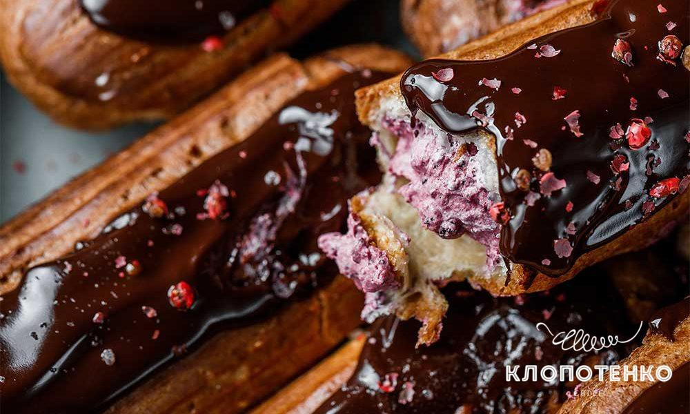
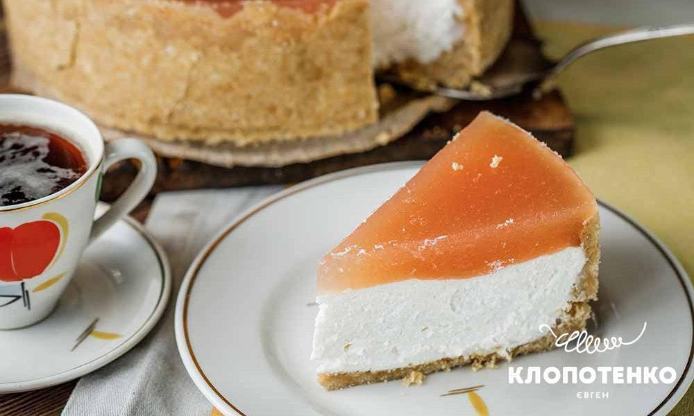
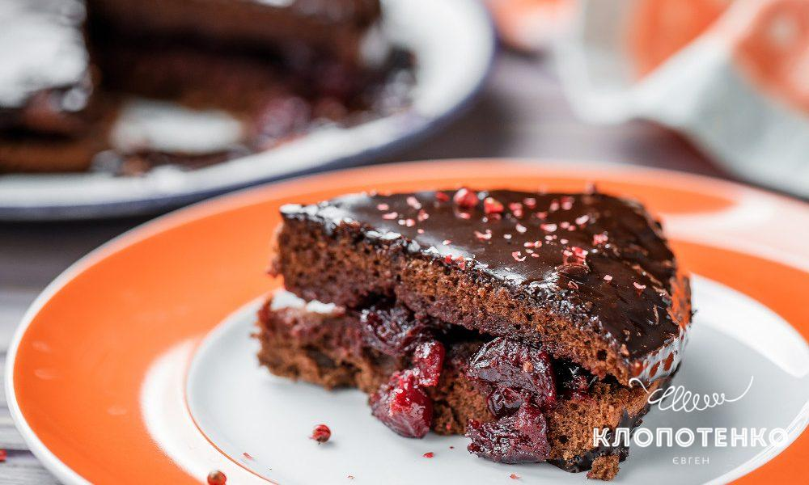
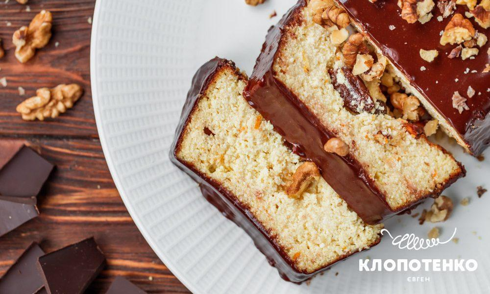
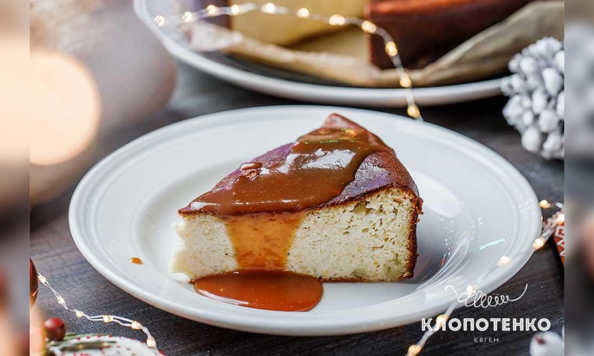
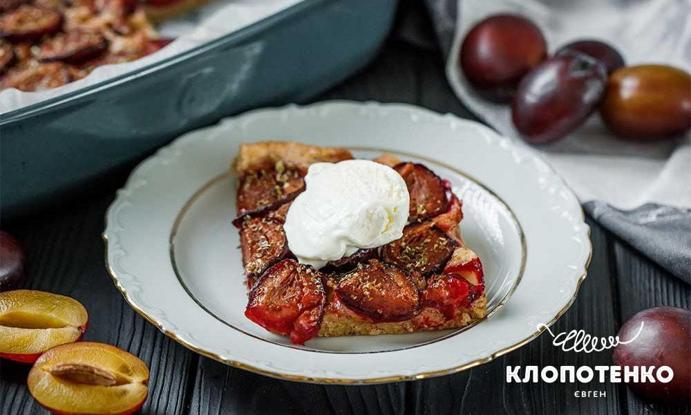
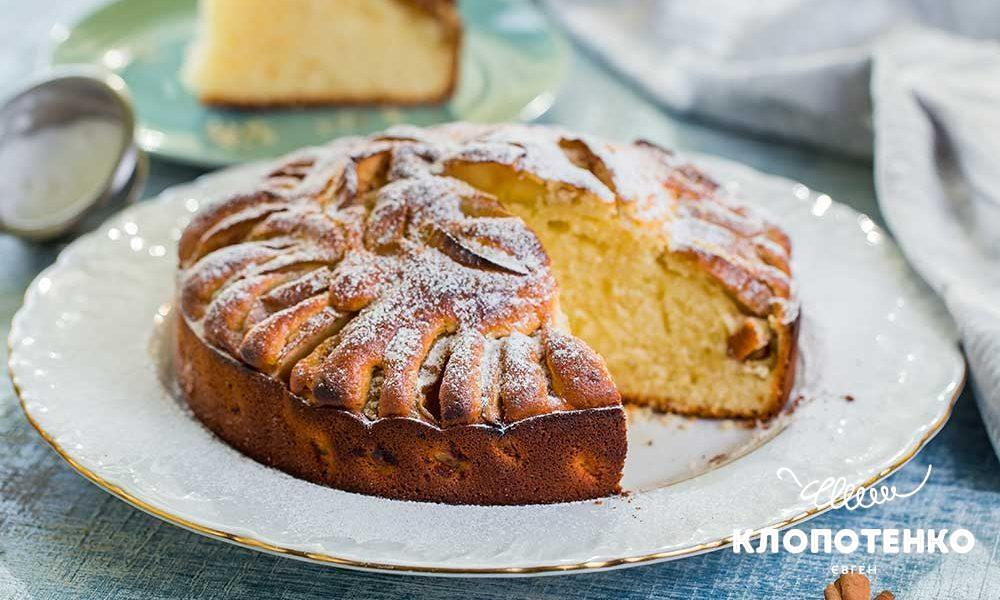
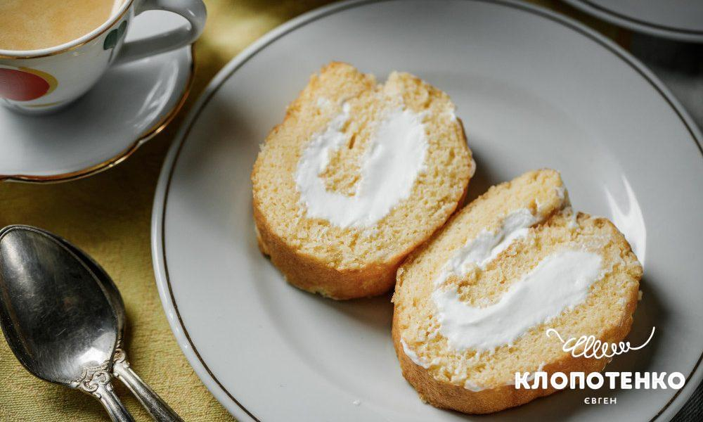
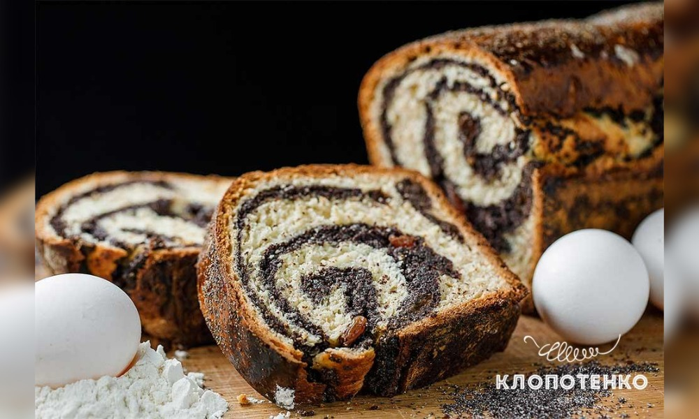

Торти і тістечка
Калорії у порції
200
Від 0
до 500 кКал
Пиріг
Тістечко
Рулет
Торт
Сирник
Скинути фільтр

Тістечко:
Еклер
225 калорій

Торт:
Чізкейк з яблуком
300 калорій

Торт:
Захер
425 калорій

Сирник:
львівський сирник
410 калорій

Сирник:
сирник з солоною карамеллю
400 калорій

Пиріг:
Пиріг зі сливами
225 калорій

Пиріг:
Яблучний пиріг
275 калорій

Рулет:
бісквітний рулет
275 калорій

Рулет:
Маковий рулет з варенням
325 калорій